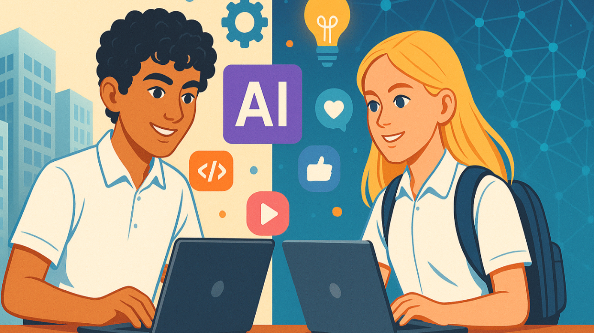

I have 2 kids - my older son just graduated from college and landed a job as a data scientist (feel very relieved about it) and my younger son is a rising senior. 5 years ago with my older son, picking a college and a major seemed much simpler. He loved computer science and statistics, so. getting a degree in Computer Science and Data Science was an easy choice. As a dad that has made his career in Tech, I saw it as a sure ticket to a stable career. Well ChatGPT and high interest rates changed all that. By the time he graduated this year, there was a glut of CS grads and the large employers were not hiring at the rate they had been.
As my younger son goes into his senior year, the topic of discussion is - what should I study in college? What kind of jobs will be there when I graduate? Here is a YouTube snippet of Pete B talking about the impact of AI on jobs -
We're talking about whole categories of jobs where not in 30 or 40 years, but in three or four, half of the entry- level jobs might not be there. And if that happens as quickly as it might happen, it will be it'll be a bit like what I lived through as a kid in the industrial Midwest when trade and automation sucked away a lot of the auto jobs in the '90s, but 10 times maybe a hundred times more disruptive because it's happening on a more widespread basis and it's happening more quickly.
Now I don't know if this will come true but I do know that there are new categories of jobs being created (specifically tied to AI). I am not sure they will replace all the jobs that get displaced, but in my work I see the demand for this skill set.
So I asked my son and his friend if they wanted to do an internship at my 2 person company and learn AI. To be clear, this is not about coding with AI but leveraging AI to solve business problems (using low code / no code tools). I was following a 3 part strategy that Dharmesh Shah had laid out for learning AI in his blog. While Dharmesh had put this together for his teams and himself (business people), I wanted to see if this would make sense to try on high school students.
It's been 2 months into a 3 month experiment and I've been fascinated about the progress they have made.
Week 1/2 : I started by giving them some agents to build. Their task was to build and publish agents on Agent.ai (once they got Claude + MCP working, they were off to the races). Then they took a need they had and they worked on building an agent for something they cared about. Here is a link to the output from a property listing agent they built.
Week 3 : They decided that teaching is the best form of learning, so they decided to build out a curriculum to teach other kids how to learn to build agents. They realized that this was something their friends could definitely do and so they decided to find a way to teach others.
Week 4 : They built out the course structure and started recording how-to videos.
They learnt their first big business lesson. Things happen that you do not control but you have to react to. Or as Mike Tyson said - Everyone has a plan till you get punched in the face.
Week 5 : Agent.ai is coming out with an update to their UI which basically rendered all their videos obsolete. So they decided to pause the course building, till the new UI came out and they spent their time honing their agent building skills by building more agents on agent.ai. Here is a link to a company match agent they built.
They learnt their next business lesson. The Pivot and the meaning of the saying "Luck is when preparation meets opportunity"
Week 6 : Google released Google Opal and it turns out building agents on Google Opal is quite similar to the skills they had already developed, so they played around with Google Opal and decided that they were going to pivot to building a course on how to build agents on Google Opal (while they waited for Agent.ai to release their UI changes).
Building a product is one thing, then you have to market it, so people know about it and use it.
Week 7 : Start recording Google Opal videos and start thinking about marketing. How do they get the word out about their videos? The good news about these tech and social media savvy youngsters is that they understand social media marketing as consumers. Going back to "Try New Tools with Specific Problems in Mind" - the question was - Can we use AI for creating videos. So they evaluated many different AI Video software - SendSpark, Captions.ai, OpusClip, Descript, HeyGen, Vizard etc. and they settled on Captions for their AI video generation tool.
Week 8 : Start creating marketing clips using Captions.ai and post shorts on YouTube, LinkedIn, Instagram, TikTok. Here is a link to their YouTube Shorts. Now they are doing stuff where they are teaching me about leveraging AI in videos.
Week 9/10 (future) : Build a course teaching students how to use Captions for video editing. As they pick up new tools, they are documenting their experience and learnings and building content that their peers can leverage.
So what did I learn -
Where this goes from here - does this help them get more clarity on what to study in college, what college to attend, what kind of jobs will be there for them - I don't know, but I feel we are playing some offense when it comes to AI as opposed to waiting for AI to disrupt us.